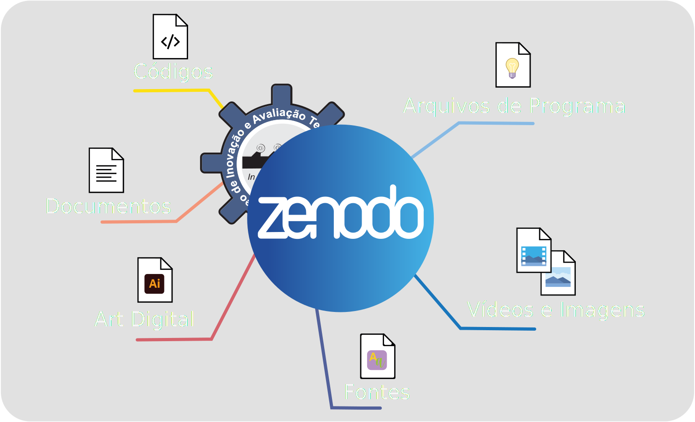

TREMSEN - Testando o Acelerômetro
Esta cheat sheet tem como objetivo apresentar, de modo simples, as principais informações para testar, de forma adequada, o acelerômetro do TREMSEN, cujo qual foi desenvolvido pelo o grupo de pesquisa NIATS da Universidade Federal de Uberlândia com a finalidade de analisar e monitorar, de modo remoto e contínuo, os distúrbios do movimento por meio de sinais inerciais.
Uploaded em 14 de Maio de 2021
Sistema de Monitoramento de Distúrbios do Movimento
Esta cheat sheet tem como objetivo apresentar, de modo simples, as principais informações para o uso adequado do Sistema de Monitoramento de Distúrbios do Movimento (NetMD), cujo qual foi desenvolvido pelo o grupo de pesquisa espanhol CAR-CSIC com a finalidade de analisar e monitorar, de modo remoto e contínuo, os distúrbios do movimento por meio de sinais inerciais.
Uploaded em 01 de Abril de 2020
Fonte de Alimentação DC Regulada
Esta cheat sheet tem como objetivo apresentar, de modo simples, as principais informações para o uso adequado da fonte de alimentação DC regulada (modelo FA-3050 da INSTRUTHERM), cuja qual é amplamente utilizada para a alimentação de componentes e dispositivos eletrônicos frequentes em laboratórios de pesquisa e desenvolvimento, escolas técnicas e centros eletrônicos de manutenção.
Uploaded em 01 de Março de 2020
Versões Anteriores
Para ver o histórico das versões das cheat sheets, visite nosso repositório no Zenodo. Além do histórico de cada cheat sheet, você encontrará todos os arquivos-fonte referenciados em cada cheat sheet.
